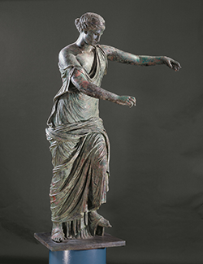

Start
Avatar
Fine
La lingua italiana
Fine
Il Museo Brozzi
Fine
Il territorio
Log out
Scegli tra le tre immagini quella che rappresenta la Vittoria realizzata da Renato Brozzi per il comune di Traversetelo
